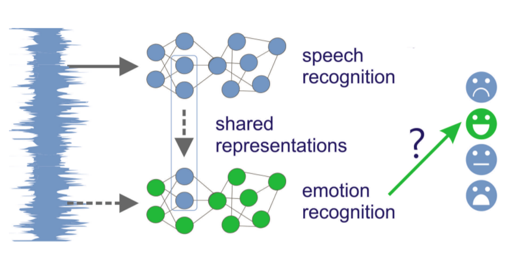

SPEECH EMOTION RECOGNITION

As humans we find speech to be the most natural way to express ourselves. We depend so much on it that we recognize its importanc even when we have to use other ways of communication, such as emails or text messages. It is no surprise that emojis have become common in text messages, because these text messages could be misunderstood, and we would like to pass the emotion along with the text as we do in speech.Since emotions help us to understand each other better, a natural outcome is to extend this understanding to computers. Speech recognition is already in our everyday life, thanks to the smart mobile devices that are able to accept and reply to voice commands with synthesized speech. The speech emotion recognition (SER) could be used to enable them to detect our emotions, as well.We define speech emotion recognition (SER) systems as a collection of methodologies that process and classify speech signals to detect the embedded emotions. SER is not a new field, it has been around for over two decades, and has regained attention thanks to the recent advancements.An SER system, based on different classifiers and different methods for features extraction, is developed. Mel-frequency cepstrum coefficients (MFCC) and modulation spectral (MS) features are extracted from the speech signals and used to train different classifiers. Feature selection (FS) was applied in order to seek for the most relevant feature subset. Several machine learning paradigms were used for the emotion classification task. A recurrent neural network (RNN) classifier is used first to classify seven emotions. Their performances are compared later to multivariate linear regression (MLR) and support vector machines (SVM) techniques, which are widely used in the field of emotion recognition for spoken audio signals.
Click on the "Choose File" button to upload a file: